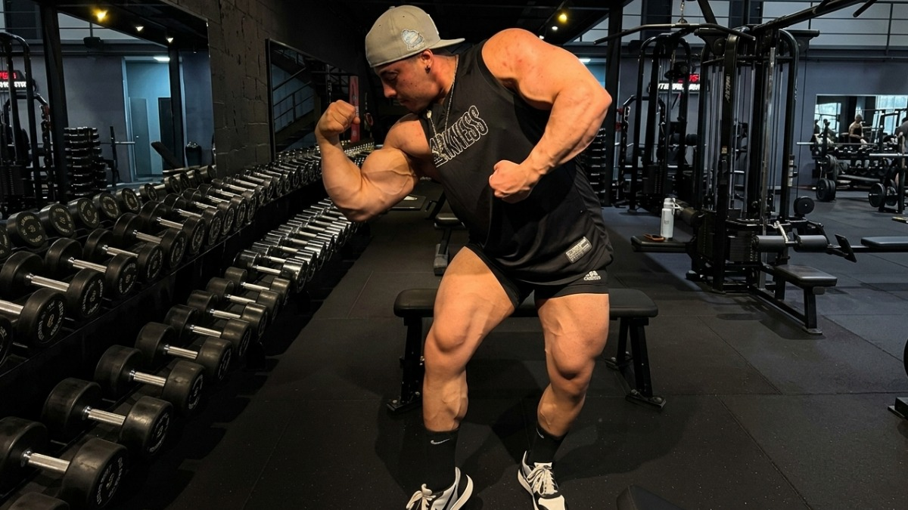

REPORTAGEM ESPECIAL: A Precoce Partida de Gabriel Ganley e os Perigos da Performance Extrema

REPORTAGEM ESPECIAL: A Precoce Partida de Gabriel Ganley e os Perigos da Performance Extrema
O Encontro do Corpo e a Investigação Policial
Familiares e amigos de Gabriel Ganley estavam sem conseguir contato com o jovem desde a noite de quinta-feira (21). Preocupado com o sumiço, um amigo do atleta foi até o condomínio, na Mooca. Ao notar que as luzes do apartamento estavam acesas e ninguém respondia aos chamados, o rapaz arrombou a porta com o auxílio de funcionários do prédio. Gabriel foi localizado de bruços, já sem vida, no chão da cozinha.
A Polícia Militar e a Polícia Civil foram acionadas. O caso foi registrado inicialmente como “morte suspeita — morte súbita sem causa aparente” no 42º Distrito Policial (Parque São Lucas). De acordo com a Secretaria da Segurança Pública de São Paulo (SSP-SP), o imóvel estava limpo e organizado, sem qualquer indício de violência ou arrombamento criminoso.
Durante os trabalhos periciais no local, os agentes apreenderam diversos medicamentos e substâncias — possivelmente anabolizantes — que foram encaminhados para análise laboratorial.
A Causa da Morte: O Coração Hipertrofiado
Embora as redes sociais e o meio do fisiculturismo tenham especulado fortemente sobre um choque hipoglicêmico fatal, o atestado de óbito oficial indicou cardiomiopatia hipertrófica.
Essa condição médica é caracterizada pelo espessamento do músculo cardíaco, dificultando o bombeamento correto do sangue e abrindo margem para arritmias severas e parada cardíaca estrutural. Médicos especialistas apontam que, embora possa ter origem genética, o crescimento desproporcional das paredes do coração é uma consequência diretamente descrita e associada ao uso abusivo e em doses cavalares de hormônios anabolizantes.
A Sombra dos Protocolos de Hormônios e Insulina
Gabriel Ganley contava com mais de 1,6 milhão de seguidores no Instagram e mantinha um canal de sucesso no YouTube. Inicialmente, ele ganhou notoriedade na internet como um símbolo do “fisiculturismo natural”, defendendo treinos disciplinados sem o uso de substâncias sintéticas. Contudo, em junho de 2025, o atleta anunciou publicamente a transição para o uso de hormônios com o objetivo de competir na categoria Open, a mais pesada e prestigiosa do esporte. Ele estava em preparação final para o evento Musclecontest Brasil, que aconteceria em julho, em Curitiba.
Após a notícia de seu falecimento, vídeos antigos gravados por ele nos “Melhores Amigos” do Instagram voltaram a repercutir. Nas gravações, Ganley admitia ter passado muito mal após fazer uso experimental de insulina pós-treino de forma irregular para potencializar o ganho de massa. Ele relatou ter sofrido crises agudas de hipoglicemia, tremedeira, suor frio e confusão mental profunda. Em entrevistas passadas, o jovem também chegou a declarar de forma premonitória que tinha plena consciência de que sua escolha de carreira:
“[...] O verdadeiro B.O é saber que você ‘tá encurtando 10 anos da sua vida. Eu tenho essa consciência. Eu sei que eu quero seguir uma carreira que vai encurtar 10, 15 anos e, po***, tomar essa decisão com 22 anos é meio embaçado, ‘tá ligado?”
Luto e Repercussão no Cenário Fitness
A falecimento precoce chocou o esporte brasileiro. A empresa de suplementação Integralmédica, patrocinadora oficial de Gabriel, emitiu uma nota oficial lamentando a perda de um jovem autêntico que inspirava milhares de pessoas diariamente com sua energia. Grandes nomes do fisiculturismo nacional, como Renato Cariani e Ramon Dino, manifestaram condolências públicas e prestaram homenagens à memória do atleta. O corpo do influenciador foi direcionado para cremação em uma cerimônia restrita a familiares e amigos